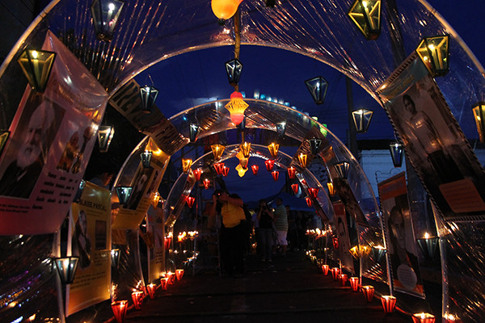

Los farolitos de Ahuachapán
Los Ahuachapanecos se preparan para cada 7 de septiembre para la tradicional Fiesta de los
Farolitos de ahuachapán, una celebración que realizan, según versiones, desde hace más 400 años.
La fiesta consiste en que los fieles colocan en sus viviendas o árboles farolitos elaborados con papel
celofán de distintos colores, en cuyo interior hay una vela.
Para el Día de Los Farolitos, se organizan excursiones, que desde distintos puntos del país traen a las personas
que aprecien el espectáculo que preparan con mucho amor los AHUACHAPANECOS: Hay quemas de pólvora, actividades
religiosas, conciertos de bandas y degustación de deliciosos platillos típicos.
En Ahuachapán, el domingo a las 6:00 de la mañana empieza un festival gastronómico en el atrio de la iglesia La Asunción
Una hora después, una misa en el mismo templo. A las 9:00 de la mañana inicia una exposición de artesanías en la Casa de la
Cultura y a las 7:00 de la noche da inicio el concurso de los farolitos, en el que un jurado elige la mejor creación
En Concepción de Ataco, a las 7:00 de la noche, habrá una solemne misa y luego la procesión en honor a la Virgen María.
Apaneca es el municipio que más recientemente comenzó a celebrar la víspera del nacimiento de la Virgen María. Apenas inició
hace cuatro años, ante la gran devoción de sus habitantes por la Virgen, dijeron fuentes de la alcaldía. En los tres municipios
se colocan farolitos que son elaborados de madera y coloridos papeles. En su interior llevan una vela, con la cual alumbran las calles de la ciudad.
Después se desarrolló por IBM la IBM 701 de la cual se entregaron 18
Las alcaldías de esas ciudades han preparado una serie de actividades para que los turistas disfruten de esta tradición, que tiene su origen en
distintos años en cada uno de los municipios.
Inicialmente se colocaban unos pocos farolitos en las puertas de las viviendas; pero tras el paso de los años, los participantes comenzaron a realizar complejas figuras.
Actualmente los farolitos se elaboran de madera y papel celofán. Las escuelas, instituciones privadas y públicas, también se involucran en esta celebración, que inicia a las 6:00
de la tarde, precisamente cuando el sol comienza a ocultarse. |

|